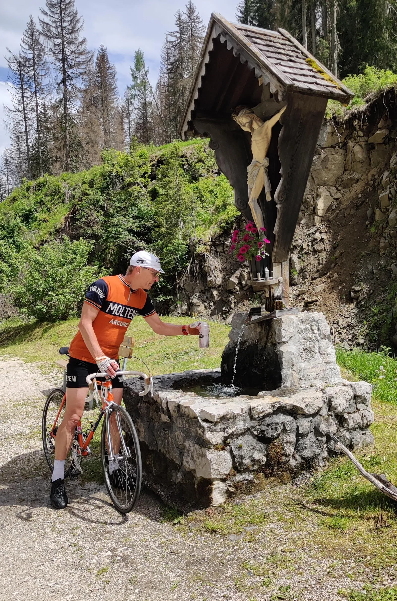
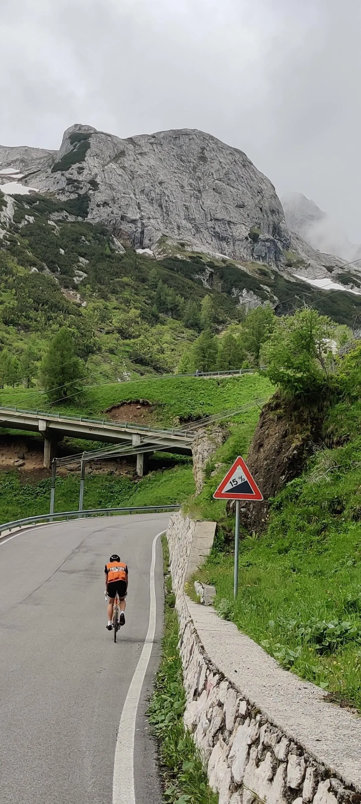
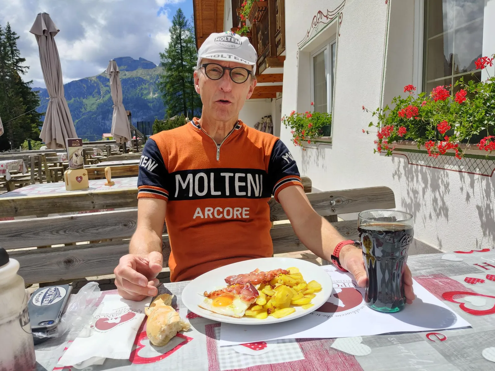
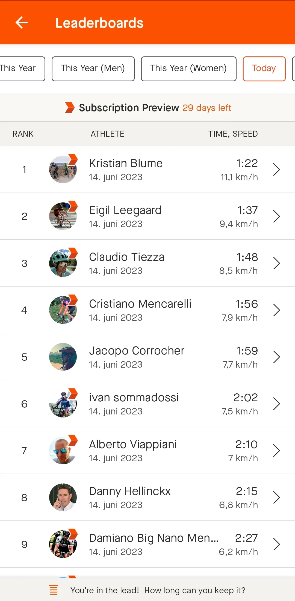

Nedtælling til Lombardiet Revenge Tour 1973 – Helligt vand, spæk og æg.

Materieludfordringerne og de ekvilibristisk afværgede fataliteter på Tre Cime turen havde fremkaldt bekymring i Molteni HQ og tidligt onsdag morgen hamrede det på døren i højdetræningslejren. En italiensk postslæber overrakte en fortsat varm telegram-udskrift fra Kaptajn Bjørnsteen, med følgende ordlyd:
”Træn hårdt, stop. Pas på jer selv, stop.”
For det utrænede øje – intet at bemærke – men for kendere af Kaptajnen, en uvant blød formulering, der vanligvis kun indeholder de tre første ord.
Som konsekvens heraf, gjordes et stop efter den første stigning, lidt øst for Arabba, ved den helligste hellige kilde i området. Leegaard fik balsameret det meste af overkroppen mens Blume nøjedes med at fylde 500 ml-dunken.

Det hellige vand behagede metabolismen og selv den gustne Fedaia-opkørsel i modvind fra Malga Ciapela til toppen ved Refugio Castiglioni, blev eksekveret i en ruf. Og endda i solskin, på trods af en modbydeligt våd udseende vejrudsigt. Helligt vand, hva’be’har!

På den anden side af nedkørslen til Canazei ventede nu Passo Sella og Passo Gardena, men også Lupo Biancos spæk, æg og brasede kartofler. Den slags fedtede bondekost, der på få minutter smører hele systemet og lindrer en knirkende hofte, menisk eller ankel. Vi forlod traktementet godt kørende!

I mellemtiden var regnen faldet i dalen foran os, men da turen nærmede sin afslutning efter godt 90 km og 2600 hm i Corvara var der kun småpytter tilbage. Nu udestod kun den rituelle bakkespurt på Mür dl giat og et efterfølgende kik på resultattavlen på toppen. Med helligt vand i piberne, var resultatet ikke overraskende: Sq. Molteni med dagens hurtigste tider.
